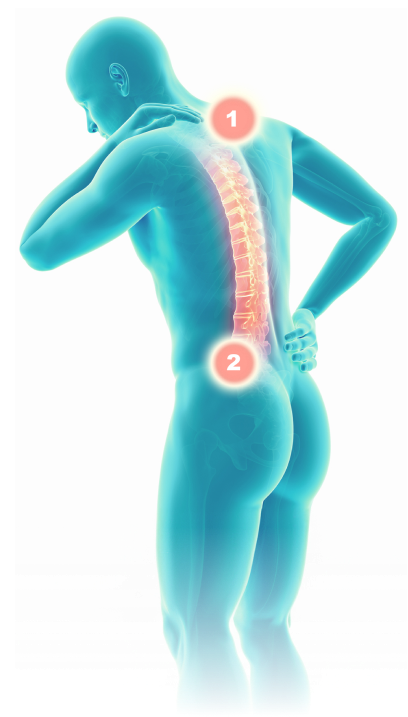

АКТИВНО
01.05.2024 - 05.06.2024
Нейромидин в комплексном лечении обострения хронических болей в спине
Уважаемый коллега!
Предлагаем включить в мониторинг первичных пациентов с периферическими нейропатиями (моно-, поли- или радикулопатией), имеющими тот или иной вид расстройства чувствительности, которому Вы назначили стандартную терапию в сочетании с препаратом Нейромидин.
Отслеживание пациентов будет проводиться в два этапа:
ПЕРВЫЙ ВИЗИТ
Вводная часть: диагноз, назначенная терапия, в том числе схема лечения Нейромидином, а также виды
расстройств чувствительности, выявленные у пациента.
ВТОРОЙ ВИЗИТ
Рассмотрение видов расстройств чувствительности у пациента после лечения, а также ответы на вопросы
об
эффективности и безопасности препарата Нейромидин
